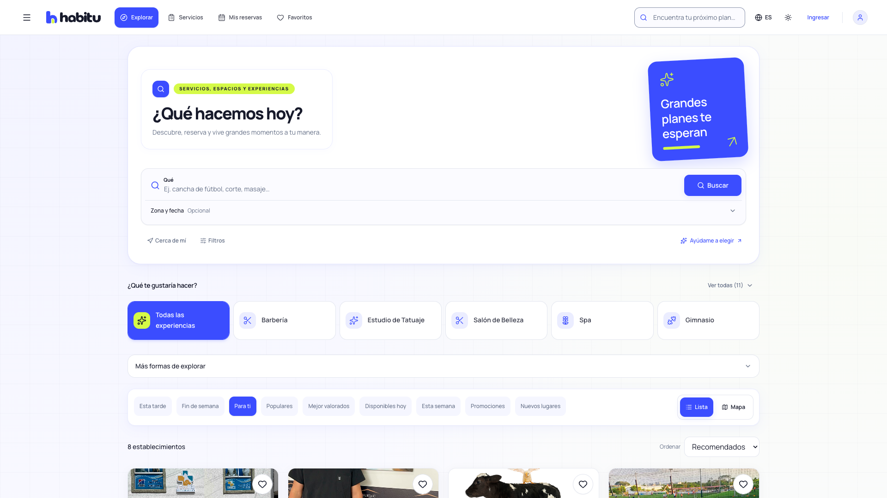
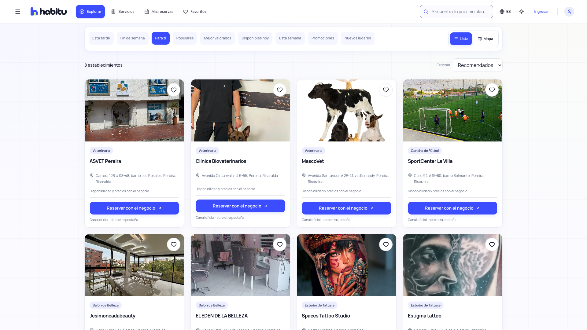
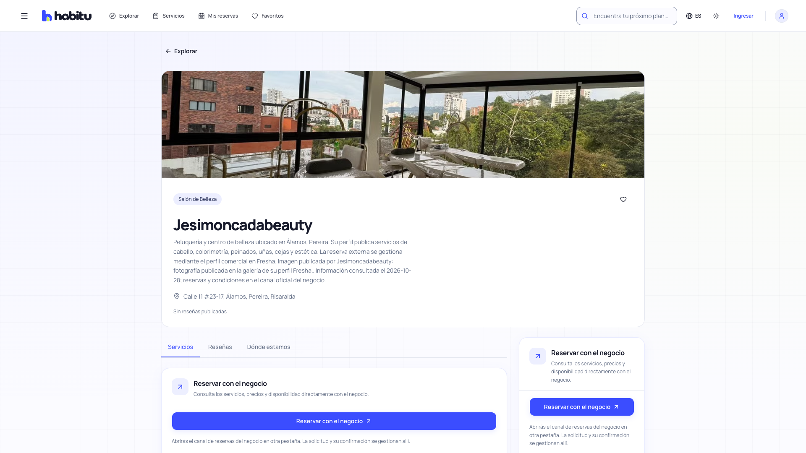
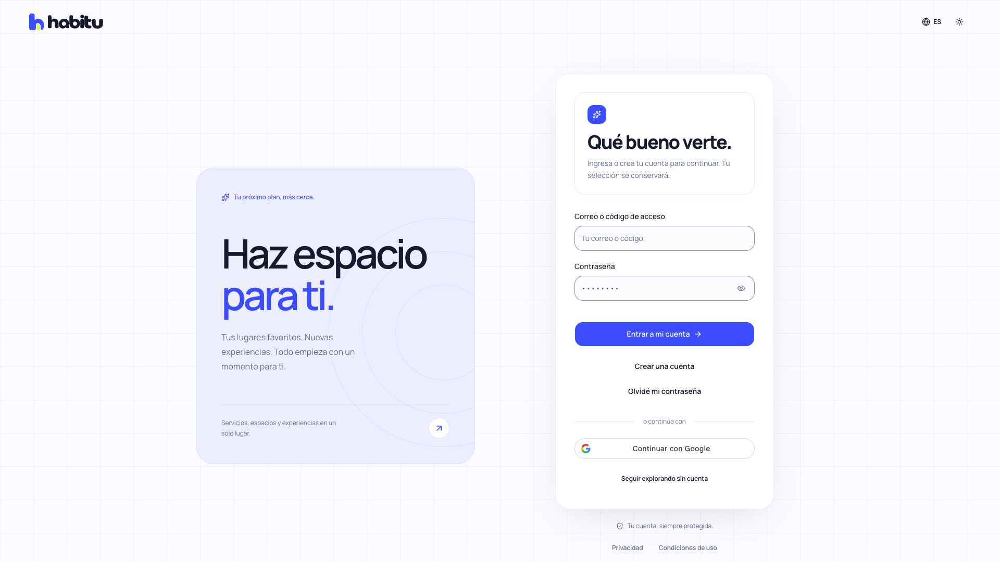

habitu.UN PLAN PARA TI
01 / EXPLORA
Tu próximo
plan empieza
aquí.
Negocios reales.
En tu ciudad.

RECORRIDO INTERACTIVO · 36 SEGUNDOS
habitu.MENOS VUELTAS, MÁS PLANES
02 / BUSCA
¿Qué quieres
hacer hoy?
Escribe un servicio.
O toca una categoría.
PUEDES EXPLORAR SIN INICIAR SESIÓN
habitu.UBICA TU PRÓXIMO PLAN
03 / MAPA
Encuentra
tu lugar
en el mapa.
Pulsa «Mapa».
Elige un marcador.

LOS MARCADORES USAN UBICACIONES PUBLICADAS
habitu.EL SIGUIENTE PASO, CLARO
04 / RESERVA
Conoce
el lugar.
Haz tu plan.
Abre el canal oficial.
Confirma con el negocio.

LAS FICHAS EXTERNAS ABREN SU AGENDA EN OTRA PESTAÑA
habitu.TU CUENTA, CUANDO LA NECESITES
05 / TU CUENTA
Explora libre.
Entra por ti.
Guarda tus favoritos.
Consulta tus reservas.

LA APP RETOMA LA ACCIÓN DESPUÉS DEL INGRESO
habitu.DESCUBRIR Y CONSULTAR, A TU RITMO
06 / TU ACTIVIDAD
Tu actividad,
en su propia
pestaña.
Abre «Analítica»
con tu cuenta de cliente.
EL INICIO QUEDA PARA DESCUBRIR
Haz espacio
para ti.
habitu-sebaz.vercel.app ↗
¿LISTO? CIERRA EL RECORRIDO Y EXPLORA